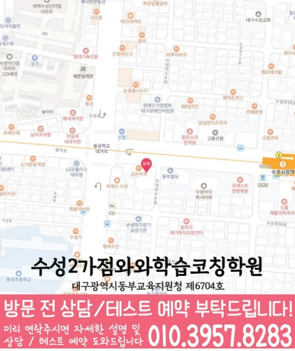

ENGLISH · MATH
수성동 영수학원
수성동 영수학원 선택 전 영어 학습 루틴·수학 학습 루틴 진단, 학교 자료, 가능 학년과 센터 위치를 확인하세요. 실제 교재로 상담할 질문도 정리했습니다.
01 Quick answer
수성동 초·중·고 영어·수학 학습에서 먼저 확인할 핵심 답변
수성동 영수학원을 비교할 때는 진도보다 영어 학습 루틴과 수학 학습 루틴이 실제 학습에서 어떻게 드러나는지 먼저 확인해야 합니다. 최근 영어·수학 교재·학교 자료·오답 기록을 준비하면 와와학습코칭센터 수성2가점 상담에서 현재 수준과 다음 점검일을 구체적으로 비교할 수 있습니다.
확인 기준
수성동 초·중·고 학생 상담에서는 영어 학습 루틴·수학 학습 루틴의 현재 상태를 실제 자료에서 나누어 확인합니다.


010-6839-8283학습 답변 요약
수성동 초·중·고 영어·수학 학습 자료를 기준으로 진단, 학습 순서, 학교·센터 사실과 상담 질문을 차례로 살펴봅니다.
수성동 영수학원 상담 전에 확인할 첫 근거
수성동 초·중·고 과정의 우선순위는 잘한 단원보다 멈춘 과정에서 찾습니다. 계획한 분량과 실제 완료한 분량이 구분되는지를 살핀 뒤 계획한 문제와 실제 완료한 문제를 구분하는지를 이어 확인하는 순서가 알맞습니다.
첫 자료에서는 ‘학습 시작 시각과 완료 여부를 적은 주간 기록’부터 살펴보고, 별도 기록에서는 ‘첫 풀이와 다시 푼 답 사이에 달라진 근거’도 확인하세요. 두 자료의 차이가 수성동 영수학원 상담에서 첫 학습 행동을 정하는 근거가 됩니다.
수성동 학교 영어·수학 자료와 현재 교재를 연결하는 법
학교 자료가 없는 경우에도 수성동 학생의 현재 교재와 학습 기록으로 시작할 수 있습니다. 실제 학교명과 진도는 상담에서 확인하고 임의로 추정하지 않습니다. 현재 자료를 비교하는 수성동 초·중·고 영어·수학 과정에서도 이 항목을 별도로 확인합니다.
표시된 동일초·동도초·동성초 목록은 상담 준비용 참고 자료입니다. 학생의 실제 재학 학교와 현재 진도를 알려 주고 자료 반영 방식을 질문하세요. 상담에는 수성동 학생의 초·중·고 영어·수학 기록도 함께 가져가세요.
수성동 초·중·고 학생에게 맞는 영어·수학 점검 기준
수성동에서 영수학원 상담이 유용한 경우는 수성동에서 초·중·고 영어·수학 상담을 준비하며 현재 교재의 진도는 나가지만 영어 학습 루틴 상태를 스스로 점검하거나 수학 학습 루틴 관련 기록을 남기기 어려운 초·중·고 학생일 때입니다. 학생이 사용 중인 교재와 실행 기록을 확인해 실제 원인과 일치하는지 먼저 살펴야 합니다.
첫 상담에서는 학생이 바꾸고 싶은 행동도 직접 말하게 해 보세요. 학부모 질문, 학생 목표와 실제 자료가 한 방향인지 확인해야 계획이 현실적입니다. 수성동 초·중·고 영어·수학 계획에서는 이 내용을 실제 학습 기록과 대조합니다.
수성동 영수학원 상담에서 정하는 조건부 4주 계획
수성동 영수학원에서 제안받은 계획은 학생 일정에 맞게 줄이거나 순서를 바꿀 수 있어야 합니다. 영어 학습 루틴과 수학 학습 루틴 중 먼저 확인할 항목을 정하고 점검일을 남기세요.
계획을 확인할 때는 문제 수보다 학생이 이유를 설명하고 다시 수행한 흔적을 봅니다. 수성동 영수학원 상담에서 첫 점검일과 계획을 바꿀 조건을 미리 질문하세요.
수성동 영수학원에서 과목별 병목을 구분하는 방법
수성동 영수학원 상담에서 한 번에 많은 과제를 약속할 필요는 없습니다. 영어 학습 루틴과 수학 학습 루틴 중 먼저 바꿀 행동 하나를 고르고 다음 점검일에 실제 기록을 확인하면 됩니다.
피드백은 정답 수보다 학생이 이유를 설명하고 다시 수행할 수 있는지에 초점을 맞춥니다. 영어 오답 유형 기록이 남아야 수업 뒤 복습이 이어졌는지 확인할 수 있습니다. 이 내용은 수성동 초·중·고 영어·수학 수업 조건을 비교할 때 확인할 질문으로 사용할 수 있습니다.
수성동 영수학원 상담 전 체크리스트
수성동 영수학원 상담 전에는 학생의 실제 자료, 어려웠던 과정과 가능한 일정을 한 장에 정리하세요. 아래 네 항목을 준비하면 학습 문제와 센터 운영 조건을 섞지 않고 질문할 수 있습니다.
표시된 가능 학년은 영어 초4·초5·초6·중1·중2·중3·고1, 수학 초4·초5·초6·중1·중2·중3·고1이며 실제 개설 여부는 상담 시점에 달라질 수 있습니다. 확인되지 않은 시간표, 차량·주차와 보강 운영은 페이지에서 단정하지 않습니다. 이 질문은 수성동에서 초·중·고 영어·수학 계획을 정하기 전에 학생과 함께 살펴봅니다.
- 현재 자료수성동 영수학원 확인용으로 최근 영어·수학 교재·학교 자료·오답 기록에서 영어 학습 루틴과 수학 학습 루틴이 드러난 부분을 표시합니다.
- 오답 근거수성동 초·중·고 영어·수학 상담에는 학습 시작 시각과 완료 여부를 적은 주간 기록과 첫 풀이와 다시 푼 답 사이에 달라진 근거를 서로 나누어 가져갑니다.
- 가능 일정수성동 초·중·고 영어·수학 학습에 필요한 통학 시간, 학교 일정과 가정 복습 시간을 적습니다.
- 센터 확인수성동 영수학원 등록 전에는 와와학습코칭센터 수성2가점의 과목·학년·시간표·교습비·보완 방식을 확인합니다.
02 Parent perspective
수성동 초·중·고 영어·수학 학부모 상담 상황
아래 수성동 초·중·고 영어·수학 상담 장면은 실제 이용 후기나 특정 학생의 성과가 아닌 준비용 가상 예시입니다. 학습 결과는 학생의 출발점과 실천 정도에 따라 달라질 수 있습니다.
수성동 초·중·고 영어·수학 상담을 준비하는 학부모가 최근 영어·수학 교재·학교 자료·오답 기록을 가져오는 장면을 가정했습니다. 학부모는 영어 학습 루틴과 수학 학습 루틴이 드러난 부분을 보여 주고, 학생이 다음 점검까지 수행할 한 가지 행동이 무엇인지 질문합니다.
수성동 초·중·고 영어·수학 학습 자료가 공개 학교 목록과 다를 수 있는 경우를 가정했습니다. 학부모는 실제 재학 학교와 현재 진도를 알려 주고 수업 가능 여부와 자료 반영 방식을 센터에서 다시 확인합니다.
03 FAQ
수성동 초·중·고 영어·수학 자주 묻는 질문
학생 자료, 가능 학년과 실제 이용 조건을 나누어 답했습니다.
수성동 초·중·고 영어·수학 상담에서는 무엇을 먼저 진단하나요?
초·중·고 영어·수학 상담에서 사용할 첫 진단 기준입니다. 최근 점수만 보지 말고 계획한 분량과 실제 완료한 분량이 구분되는지와 계획한 문제와 실제 완료한 문제를 구분하는지를 먼저 살핍니다. 수성동 학생의 최근 영어·수학 교재·학교 자료·오답 기록을 가져오면 두 항목이 실제 학습에서 어떻게 나타나는지 구분할 수 있습니다.
수성동의 초·중·고 영어·수학 가능 학년과 실제 수업 일정은 어떻게 확인하나요?
수성동 영수학원 페이지의 제공 센터 사실을 기준으로 답합니다. 수성동 상담 페이지의 주소 자료에 기재된 위치는 대구 수성구 명덕로 404 1동 404호 와와학습코칭학원입니다. 제공 자료의 과목별 학년 정보는 영어 초4·초5·초6·중1·중2·중3·고1, 수학 초4·초5·초6·중1·중2·중3·고1입니다. 교습비 자료는 페이지의 센터별 교습비 확인 버튼에서 볼 수 있습니다. 제공 학년 정보와 별개로 실제 개설 반, 시간표와 보강 방식은 센터 상담에서 다시 확인하는 것이 정확합니다.
수성동 초·중·고 영어·수학 학습 순서는 어떻게 정하나요?
초·중·고 영어·수학 학습 순서는 현재 병목과 학교 일정을 함께 놓고 정합니다. 모든 단원이나 과목을 같은 비중으로 다루지 않고 영어 학습 루틴과 수학 학습 루틴의 어려움을 구분합니다. 학교 일정과 현재 자료를 바탕으로 집중할 범위와 이어 갈 복습 내용을 나누는 편이 좋습니다. 와와학습코칭센터 수성2가점의 수성동 초·중·고 영어·수학 운영 여부는 상담 시점에 다시 확인합니다.
수성동 초·중·고 영어·수학 수업 시간과 결석 시 보완 방식은 어떻게 확인하나요?
초·중·고 영어·수학 시간표·보완 방식은 현재 센터 운영 범위를 직접 확인해야 합니다. 시간표·반 편성·보완 운영은 센터별로 다를 수 있어 페이지에서 확정하지 않습니다. 수성동 학생의 학교 일정과 통학 시간을 알려 주고 가능한 요일, 피드백 주기와 결석 시 절차를 함께 질문하세요.
수성동 초·중·고 영어·수학 상담 때 학생은 어떤 자료를 준비하면 좋나요?
초·중·고 영어·수학 상담 자료는 현재 학습 상태를 보여 주는 범위에서 고릅니다. 최근 영어·수학 교재·학교 자료·오답 기록에서 어려웠던 부분을 표시해 가져오면 됩니다. 자료가 많지 않아도 학습 시작 시각과 완료 여부를 적은 주간 기록과 첫 풀이와 다시 푼 답 사이에 달라진 근거를 확인할 수 있으면 학습 순서를 질문하기에 충분합니다. 수성동 학부모는 초·중·고 영어·수학 질문과 이용 조건을 나누어 기록해 두세요.
04 Related
수성동 관련 학원·상담 페이지
같은 지역의 과목 조합과 학년 카테고리, 앞뒤 지역 안내를 함께 확인하세요.